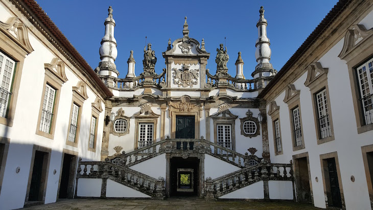

Seccção Museológica da Casa de Mateus

Mais uma obra atribuída a Nicolau Nasoni, a casa de Mateus, remonta ao século XVIII e é um belo exemplar da arquitetura barroca de Portugal.
Interiormente, possui uma biblioteca e tem um valioso acervo museológico, de onde se destaca uma edição exclusiva da obra “Os Lusíadas”, de Luís de Camões.
- Contacto: 259323121
- casademateus@casademateus.pt
- Fundação da Casa de Mateus 5000-291 Vila Real
“O nome de Trasmontano, que quer dizer filho de Trás-os-Montes, pois assim se chama o Reino Maravilhoso de que vos falei.” (Miguel Torga)